USMR Lecture 3
Orbis pictus
Milan Valášek
Before we start
- Any questions about last week’s matters?
Today
- Functions
- Basic data visualisation
- Distributions
- Sampling distribution
- Central Limit Theorem
Fun in function()
Functions
- Informally, function a process that takes some input and turns it into a unique output
- Individual inpults are called parameters
Play time!
- You just invented the identity function!
- \(f(x) = x\)
Functions
- Informally, function a process that takes some input and turns it into a unique output
- Individual inpults are called parameters
- The pocess itself is the definition of a function
- \(f(x) = x^2\)
- \(f(2) = 4\)
- \(f(5) = 25\)
- \(f(0) = 0\)
- \(f(1) = 1\)
Functions in the real world
- It’s not “just maths” (nothing ever is)
- Everyday operations can be seen as functions of some arguments
- Who’s taller? Me or Martin?
- Measure my height
- Measure Martin’s height
- Compare the two
- If not equal, return name of taller person
- Else return “both are the same height”
- \(taller(Martin, Milan) = Martin\)
Functions in R
- Functions are ubiquitous in
R(and any other programming language) - Basically the same as mathematical functions but can be much more complex
- Also take arguments, have definitions, and return output
# define f as function of argument x
f <- function(x) {x*x}
# works
f(2)
[1] 4
f(100)
[1] 10000Functions in R
- Every operation is a function –
<-,+,sum(),sd() - If the function was built in
Ryou can see its definition
# see the code inside the sd() function
sd
function (x, na.rm = FALSE)
sqrt(var(if (is.vector(x) || is.factor(x)) x else as.double(x),
na.rm = na.rm))
<bytecode: 0x000000000bd24b30>
<environment: namespace:stats>Functions brake
- Functions are not all-powerful
- They need the right kind and number of arguments
- kitten2 means nothing
- \(taller(Martin)\) doesn’t give enough arguments
- Output of some arguments might not be defined
- Division by zero
# wrong kind of argument
f("Milan")
Error in x * x: non-numeric argument to binary operator
# incorrect number of arguments
sd()
Error in is.vector(x): argument "x" is missing, with no defaultAll sorts
- Functions range from vey simple to huge
- They can look intimidating but they all do the same thing:
- Take arguments
- Apply some defined operation to them
- Return output
Visualising functions
- Function parameters and output can be visualised as perpendicular axes in space
- Because our world has 4 dimensions (3 spatial + time), visualising functions with more than 3 varying parameters is tricky (even 3 is a bit of a stretch)
Visualising functions
- Let’s start simple –
\(f(x) = x\)
Visualising functions
- Let’s start simple –
\(f(x) = x\)
Visualising functions
- Let’s start simple –
\(f(x) = x\) - Plot x = [1, 5, −10, 15.6, −19]
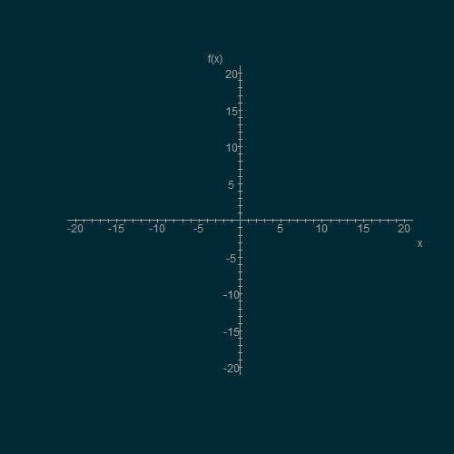
Visualising functions
- Let’s start simple –
\(f(x) = x\) - Plot x = [1, 5, −10, 15.6, −19]
Visualising functions
- Let’s start simple –
\(f(x) = x\) - Plot x = [1, 5, −10, 15.6, −19]
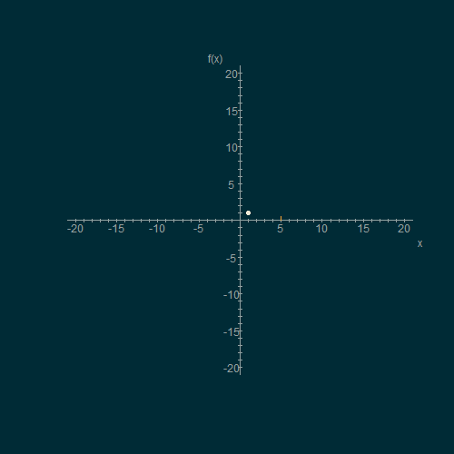
Visualising functions
- Let’s start simple –
\(f(x) = x\) - Plot x = [1, 5, −10, 15.6, −19]
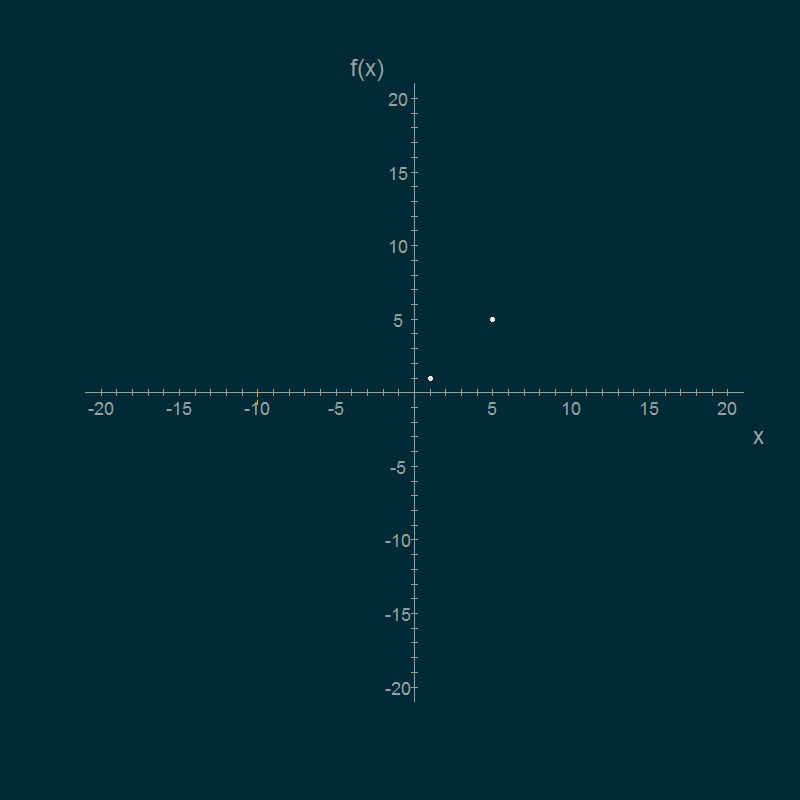
Visualising functions
- Let’s start simple –
\(f(x) = x\) - Plot x = [1, 5, −10, 15.6, −19]

Visualising functions
- Let’s start simple –
\(f(x) = x\) - Plot x = [1, 5, −10, 15.6, −19]
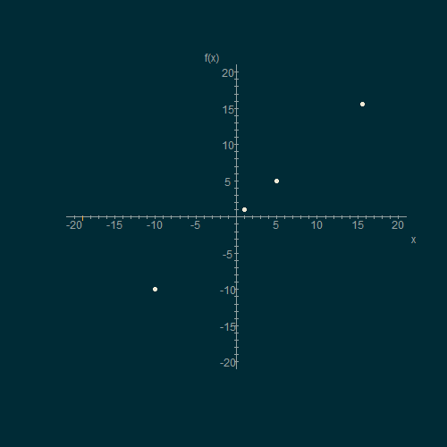
Visualising functions
- Let’s start simple –
\(f(x) = x\) - Plot x = [1, 5, −10, 15.6, −19]
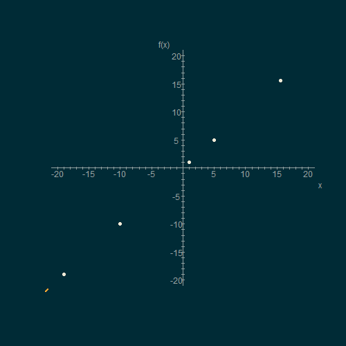
Visualising functions
- OK, now for something different:
\[f(x) = x^2\]
Visualising maths operations
- OK, now for something different:
\[f(x) = x^2\]

Visualising maths operations
- OK, now for something different:
\[f(x) = (x + 15)^2\]
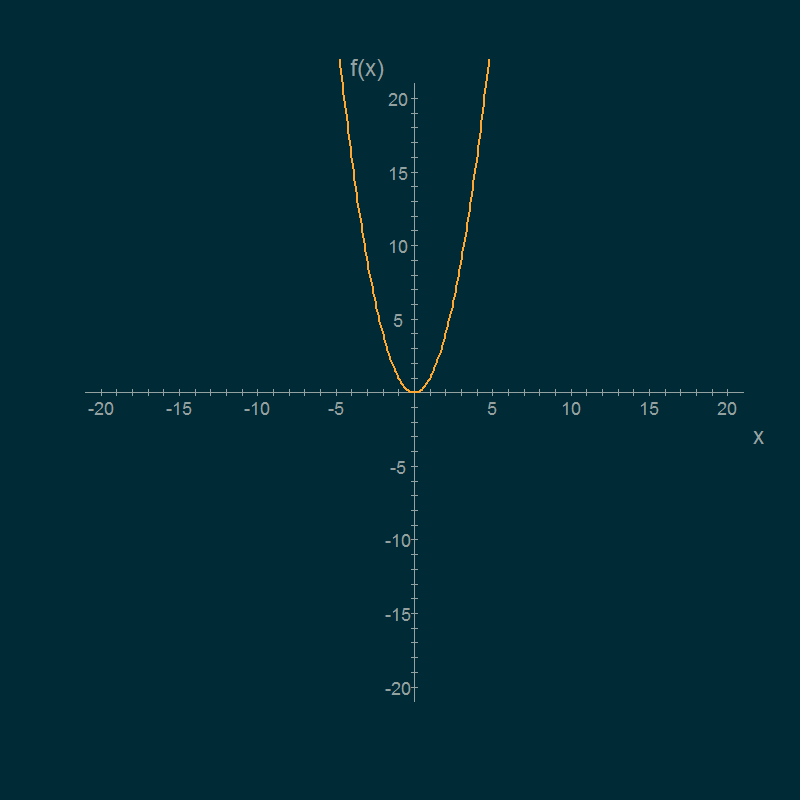
Visualising maths operations
- OK, now for something different:
\[f(x) = (x + 15)^2\]
Visualising maths operations
- OK, now for something different:
\[f(x) = (x - 5)^2\]
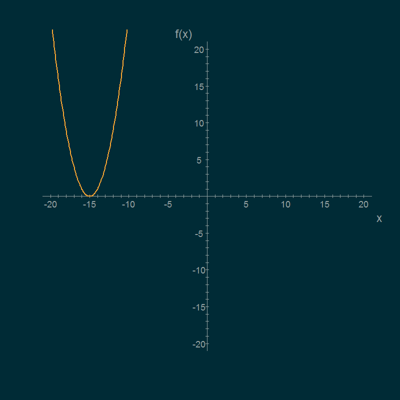
Visualising maths operations
- OK, now for something different:
\[f(x) = (x - 5)^2\]
Visualising maths operations
- OK, now for something different:
\[f(x) = -((x-5)^2)\]
Visualising maths operations
- OK, now for something different:
\[f(x) = -((x-5)^2)\]
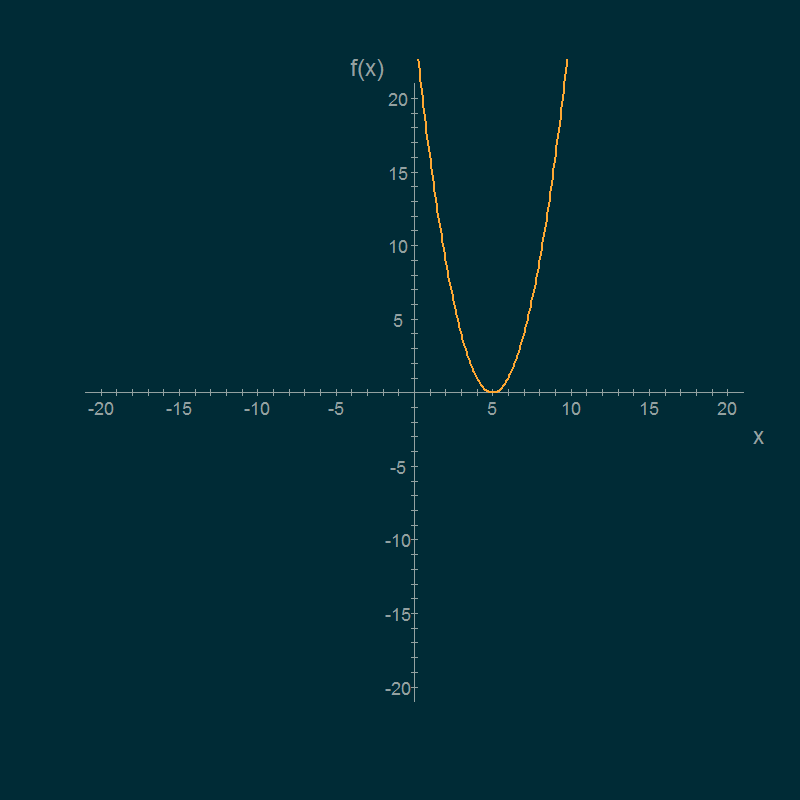
Visualising maths operations
- OK, now for something different:
\[f(x) = -((x-5)^2)\times 3\]
Visualising maths operations
- OK, now for something different:
\[f(x) = -((x-5)^2)\times 3\]

Visualising maths operations
- OK, now for something different:
\[f(x) = -((x-5)^2)/10\]

Visualising maths operations
- OK, now for something different:
\[f(x) = -((x-5)^2)/10\]

Visualising maths operations
- OK, now for something different:
\[f(x) = -((x-5)^2)/10 -10\]

Visualising maths operations
- OK, now for something different:
\[f(x) = -((x-5)^2)/10 -10\]
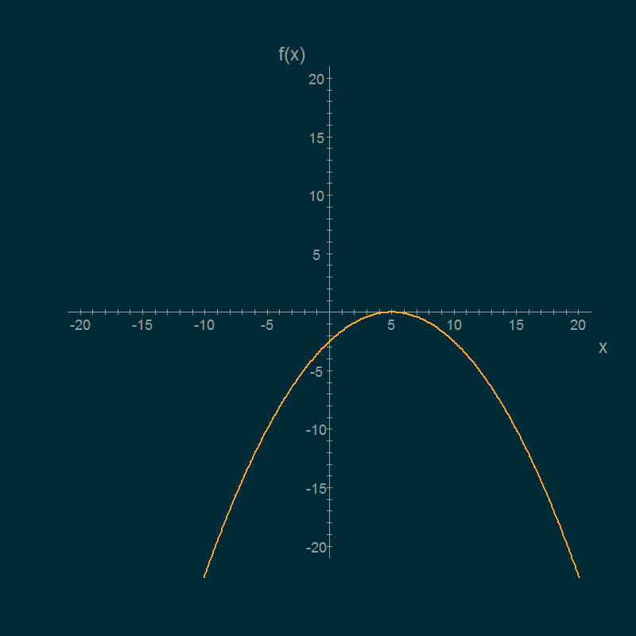
Visualising maths operations
- OK, now for something different:
\[f(x) = -((x-5)^2)/10 + 5\]
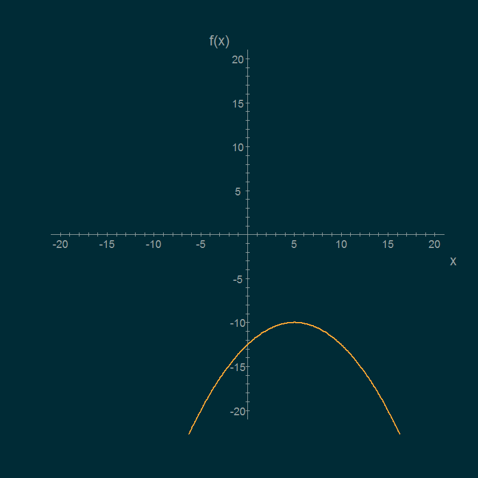
Visualising maths operations
- OK, now for something different:
\[f(x) = -((x-5)^2)/10 + 5\]
Visualising maths operations
- OK, now for something different:
\[f(x) = |-((x-5)^2)/10 + 5|\]

Visualising maths operations
- OK, now for something different:
\[f(x) = |-((x-5)^2)/10 + 5|\]

Linear function
- one of the most important functions with respect to statistics
\(b_0\) is the intercept – the value of y for x = 0\(b_1\) is the slope, or gradient of the line – how much does y increase or decrease when x is inclreased by 1.
Linear function – Intercept
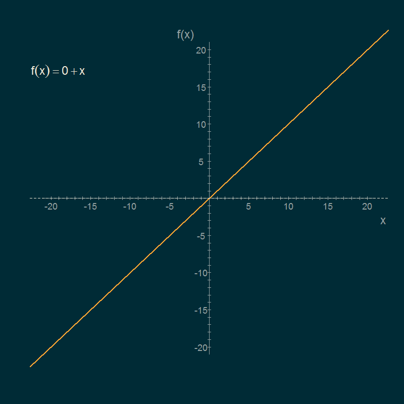
Linear function – Intercept
Linear function – Slope
Linear function – Slope
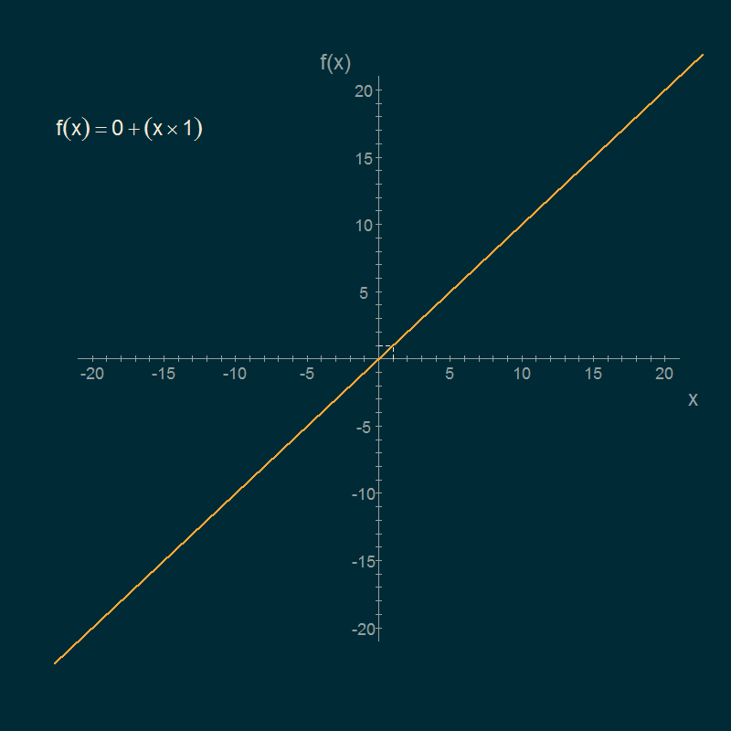
Linear function
Remember: Every single* straight line is a function of x characterised by the intercept (\(b_0\)) and the slope (\(b_1\))
* Well, except for the vertical line, because that one is not a function of x
Worth a thousand words
Visualising data
The shape of things
Take 10
Going meta
CLT: No scrubs
CLT in action {data-transition=“fade-in none-out”, data-gif=“repeat”}

CLT in action
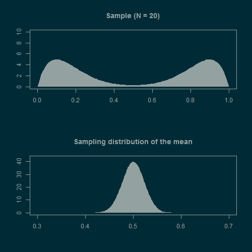